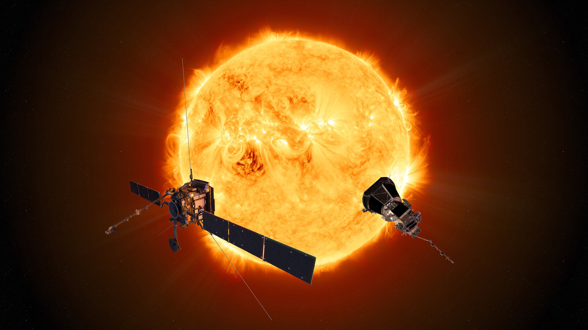
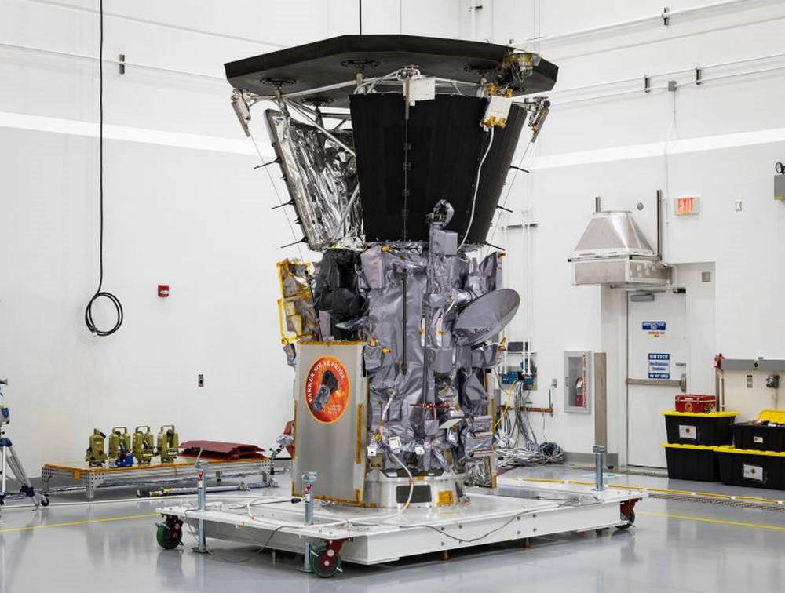
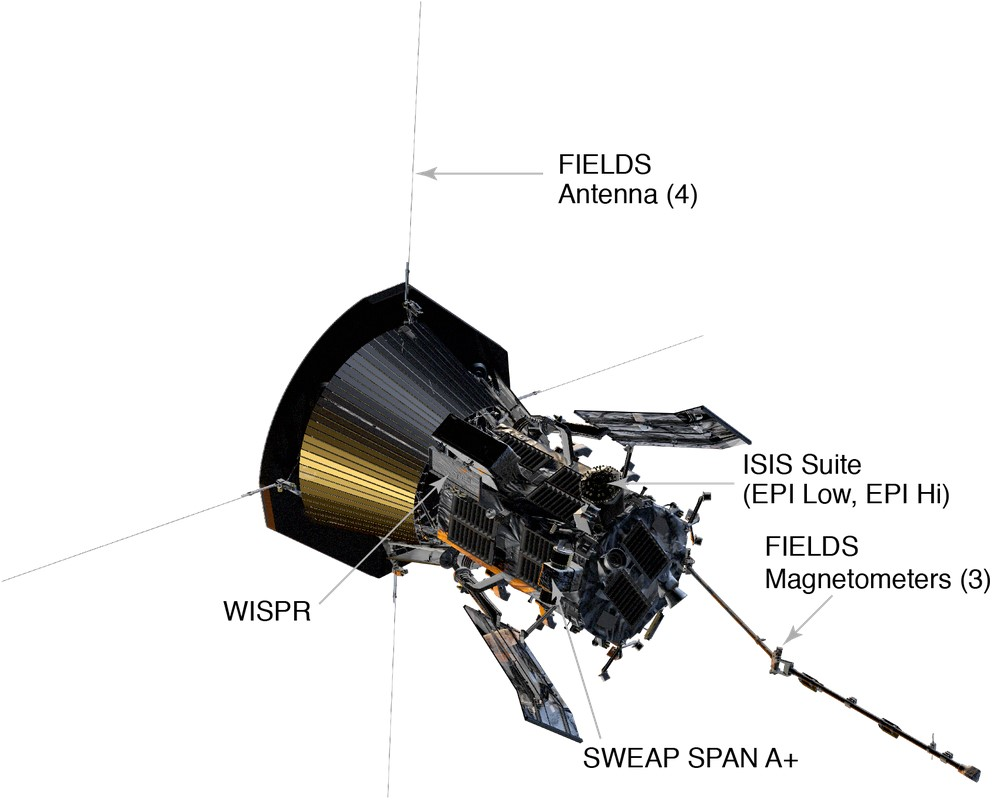
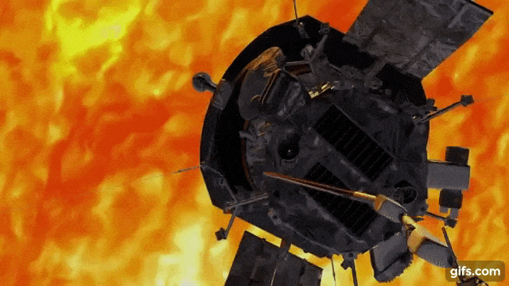
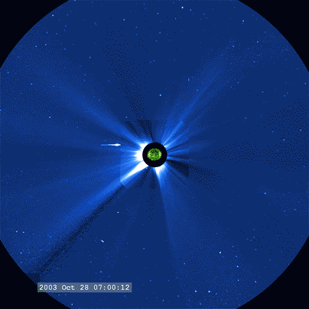
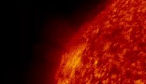
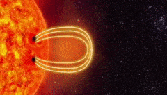
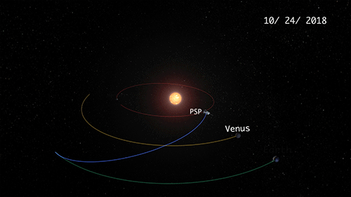

ON THE WAY
NASA's historic Parker Solar Probe mission is revolutionizing our understanding of the Sun, where changing conditions can propagate out into the solar system, affecting Earth and other worlds. Parker Solar Probe travels through the Sun atmosphere, closer to the surface than any spacecraft before it, facing brutal heat and radiation conditions to provide humanity with the closest-ever observations of a star.
In order to unlock the mysteries of the Sun's atmosphere, Parker Solar Probe uses Venus’ gravity during seven flybys over nearly seven years to gradually bring its orbit closer to the Sun. The spacecraft will fly through the Sun’s atmosphere as close as 3.8 million miles to our star’s surface, well within the orbit of Mercury and more than seven times closer than any spacecraft has come before.
Flying into the outermost part of the Sun's atmosphere, known as the corona, for the first time. The spacecraft will fly close enough to the Sun to watch the solar wind speed up from subsonic to supersonic, and it will fly though the birthplace of the highest-energy solar particles . To perform these unprecedented investigations, the spacecraft and instruments are protected from the Sun’s heat by a 4.5-inch-thick (11.43 cm) carbon-composite shield, which needs to withstand temperatures outside the spacecraft that reach nearly 2,500 F (1,377 C).
The primary science goals for the mission are to trace how energy and heat move through the solar corona and to explore what accelerates the solar wind as well as solar energetic particles.
The Living With a Star flight program is managed by the agency’s Goddard Space Flight Center in Greenbelt, Maryland, for NASA’s Science Mission Directorate in Washington. The Johns Hopkins University Applied Physics Laboratory (APL) in Laurel, Maryland, manages the mission for NASA. APL designed, built, and operates the spacecraft
In Depth: Parker Solar Probe
NASA's Parker Solar Probe is diving into the Sun’s atmosphere, facing brutal heat and radiation, on a mission to give humanity its first-ever sampling of a star’s atmosphere. On Dec. 14, 2021, NASA announced that Parker had flown through the Sun’s upper atmosphere – the corona – and sampled particles and magnetic fields there. This marked the first time in history, a spacecraft had touched the Sun. Parker Solar Probe is designed to swoop within about 4 million miles (6.5 million kilometers) of the Sun's surface to trace the flow of energy, to study the heating of the solar corona, and to explore what accelerates the solar wind. During its journey, the mission will provide answers to long-standing questions that have puzzled scientists for more than 60 years: Why is the corona much hotter than the Sun's surface (the photosphere)? How does the solar wind accelerate? What are the sources of high-energy solar particles? We live in the Sun's atmosphere and this mission will help scientists better understand the Sun's impact on Earth. Data from Parker will be key to understanding and, perhaps, forecasting space weather. Parker can survive the Sun's harsh conditions because cutting-edge thermal engineering advances protect the spacecraft during its dangerous journey. The probe has four instrument suites designed to study magnetic fields, plasma, and energetic particles, and image the solar wind. The mission is named for Dr. Eugene N. Parker, who pioneered our modern understanding of the Sun.
PARKER SOLAR PROBE {Concept and Material used} :
FIELDS is a science instrument on the Parker Solar Probe (PSP), designed to measure magnetic fields in the solar corona during its mission to study the Sun. It is one of four major investigations on board PSP, along with WISPR, ISOIS, and SWEAP. It features three magnetometers. FIELDS is planned to help answer an enduring questions about the Sun, such as why the solar corona is so hot compared to the surface of the Sun and why the solar wind is so fast (a million miles per hour) The host spacecraft, Parker Solar Probe, was launched by a Delta IV Heavy on August 12, 2018 from Florida, USA. On August 13, 2018 FIELDS became the first instrument to be activated including beginning deployment of the 4 whip antenna (clamps unlocked) and extension of the magnetometer boom. On September 4, 2018 the whip antennas were deployed. The key components of FIELDS are: • Five voltage sensors. • Two fluxgate magnetometers. • One search-coil magnetometer. • Main Electronics Package.
FIELDS is a science instrument on the Parker Solar Probe (PSP), designed to measure magnetic fields in the solar corona during its mission to study the Sun. It is one of four major investigations on board PSP, along with WISPR, ISOIS, and SWEAP. It features three magnetometers. FIELDS is planned to help answer an enduring questions about the Sun, such as why the solar corona is so hot compared to the surface of the Sun and why the solar wind is so fast (a million miles per hour) The host spacecraft, Parker Solar Probe, was launched by a Delta IV Heavy on August 12, 2018 from Florida, USA. On August 13, 2018 FIELDS became the first instrument to be activated including beginning deployment of the 4 whip antenna (clamps unlocked) and extension of the magnetometer boom. On September 4, 2018 the whip antennas were deployed. The key components of FIELDS are: • Five voltage sensors. • Two fluxgate magnetometers. • One search-coil magnetometer. • Main Electronics Package.
INTERGRATED SCIENCE INVESTIGATION OF THE SUN
Integrated Science Investigation of the Sun or IS☉IS, is an instrument aboard the Parker Solar Probe, a space probe designed to study the Sun. IS☉IS is focused on measuring energetic particles from the Sun, including electrons, protons, and ions. The parent spacecraft was launched in early August 2018, and with multiple flybys of Venus will study the heliosphere of the Sun from less that 4 million kilometers or less than 9 solar radii. IS☉IS consists of two detectors, EPI-Lo and EPI-Hi, corresponding to detection of relatively lower and higher energy particles. EPI-Lo is designed to detect from about 20 keV per nucleon up to 15 MeV (mega electronvolts) total energy, and for electrons from about 25 keV up to 1000 keV. EPI-Hi is designed to measure charged particles from about 1– to 200 MeV per nucleon and electrons from about 0.5 to 6 MeV, according to a paper about the device. The shortname includes a symbol for the Sun, a circle with a dot in it: ☉. NASA suggests pronouncing the name as "ee-sis" in English.
Wide-Field Imager for Solar Probe (WISPR
The Wide-Field Imager for Solar Probe (WISPR) is an imaging instrument of the Parker Solar Probe mission to the Sun, launched in August 2018. Imaging targets include visible light images of the coroan, solar wind, shocks, solar ejecta, etc. Development of WISPR was led by the U.S. Naval Research Laboratory. The Parker Solar Probe with WISPR on board was launched by a Delta IV Heavy on 12 August 2018 from Cape Canaveral, Florida. WISPR is intended take advantage of the spacecraft's proximity to the Sun by taking coronagraph-style images of the solar corona and features like coronal streamers, plumes, and mass ejections. One of the goals is to better understand the structure of the solar corona near the Sun. WISPR is designed to study the electron density and velocity structure of the corona. The instrument field of view is planned to extend from 13 to 108 degrees away from the Sun, and does not directly image the Sun; the area of interest is a very wide field extending away from the Sun. WISPR includes two separate telescopes, each with a radiation-hardened CMOS imager with resolution of 2,048×1,920 pixels. The CMOS sensors are an active pixel sensor type of detector. The WISPR first light image was published in September 2018. In December, a view of the corona including a coronal streamer was released. In November 2018, a video of WIPSR recording solar wind during the spacecraft's first close pass to the Sun was released.] One project scientist noted, "The data we’re seeing from Parker Solar Probe’s instruments is showing us details about solar structures and processes that we have never seen before,
!--
SWEAP, Solar Wind Electrons Alphas and Protons
SWEAP, Solar Wind Electrons Alphas and Protons, is an instrument on the uncrewed space probe to the Sun, the Parker Solar Probe. The spacecraft with SWEAP on board was launched by a Delta IV Heavy on 12 August 2018 from Cape Canaveral, Florida. SWEAP includes two types of instruments, the Solar Probe Cup (SPC) and Solar Probe Analyzers (SPAN). SWEAP has four sensors overall, and is designed to take measurements of the Solar wind including electrons and ions of hydrogen (protons) and helium (these are the main components of the Solar wind and coronal plasma).
DETAILS OF SUN :
The Sun is the star at the center of the Solar System. It is by far the most important source of energy for life on Earth. The Sun is a nearly perfect spherical ball of hot plasma, with internal convective motion that generates a magnetic field via a dynamo process. The diameter of the Sun is about 109 times that of Earth, and it has a mass about 330,000 times that of Earth, • Volume: 1,409,272,569,059,860,000 km3 • Radius: 432,168.6 miles • Mass: 1.989E30 kg • Surface area: 2,347,017,636,988 square miles • Equatorial circumference: 2,715,395.6 miles • Density: 1.409 g/cm3 Our Sun is a 4.5 billion-year-old star – a hot glowing ball of hydrogen and helium at the center of our solar system. The Sun is about 93 million miles (150 million kilometers) from Earth, and without its energy, life as we know it could not exist here on our home planet.
First of NASA's SunRISESmallSats Rolls Off Production Line
The Sun is the largest object in our solar system. The Sun’s volume would need 1.3 million Earths to fill it. Its gravity holds the solar system together, keeping everything from the biggest planets to the smallest bits of debris in orbit around it. The hottest part of the Sun is its core, where temperatures top 27 million degrees Fahrenheit (15 million degrees Celsius). The Sun’s activity, from its powerful eruptions to the steady stream of charged particles it sends out, influences the nature of space throughout the solar system.
SUN’S HEAT AND PRESSURE.
The sun is able to maintain it's size due to the intense heat within the sun's core which produces pressure that balances out the two forces. The sun is composed of mostly helium and hydrogen. What happens is that the hydrogen nuclei collide into one another and form helium nuclei. This process of transformation from hydrogen to helium is called the proton-proton chain. In order for the sun to keep the pressure within, it has to give off energy by the process of the proton-proton chain. It fuses and converts 1.0 × 109 kg/s of hydrogen nuclei into helium nuclei. The pressure at the center of the sun ranges from 3.4 × 108 atm to 2.25 × 1011 atm depending upon the source. Some sources don't give numbers, but only compare it to the earth's characteristics
TEMPERATURE
Temperatures in the sun's atmosphere also vary considerably between the layers. In the photosphere, temperatures reach about 10,000 degrees F (5,500 degrees C) according to the educational website(opens in new tab) The Sun Today. It is here that the sun's radiation is detected as visible light. Sunspots on the photosphere appear dark because they are cooler than the other parts of the sun's surface. The temperature of sunspots can be as low as 5,400 to 8,100 degrees F (3,000 to 4,500 degrees C) according to the University Corporation of Atmospheric Research (UCAR)(opens in new tab).
The Sun's Magnetic Field
The Sun has a very large and very complex magnetic field. The magnetic field at an average place on the Sun is around 1 Gauss, about twice as strong as the average field on the surface of Earth (around 0.5 Gauss). Since the Sun's surface is more than 12,000 times larger than Earth's, the overall influence of the Sun's magnetic field is vast. The magnetic field of the Sun actually extends far out into space, beyond the furthest planet (Pluto). This distant extension of the Sun's magnetic field is called the Interplanetary Magnetic Field (IMF). The solar wind, the stream of charged particles that flows outward from the Sun, carries the IMF to the planets and beyond. The solar wind and IMF interact with planetary magnetic fields in complex ways, generating phenomena such as the aurora. Overall, the basic shape of the Sun's magnetic field is like the shape of Earth's field... or like the field of a simple bar magnet. However, superimposed on this basic field (called a dipole field) is a much more complex series of local fields that vary over time. Places where the Sun's magnetic field is especially strong are called active regions, and often produce telltale sunspots.
Challenges (parker solar probe):
On May 31, 2017, NASA has renamed the Solar Probe Plus spacecraft humanity's first mission to a star, which will launch in 2018 as the "Parker Solar Probe" in honor of astrophysicist Eugene Parker. The announcement was made at a ceremony at the University of Chicago, where Parker serves as the S. Chandrasekhar Distinguished Service Professor Emeritus, Department of Astronomy and Astrophysics. The SPP science objectives are: 3) 4) 5) 1) Determine the structure and dynamics of the magnetic fields at the sources of the fast and slow solar wind. 2) Trace the flow of energy that heats the corona and accelerates the solar wind. 3) Determine what mechanisms accelerate and transport energetic particles. 4) Explore dusty plasma phenomena in the near-sun environment and their influence on the solar wind and energetic particle formation. Parker Solar Probe has officially sampled the sun In December 2021, NASA announced that Parker Solar Probe had achieved its cornerstone objective: making the first measurements from within the atmosphere of a star, effectively becoming the first spacecraft to "touch the sun." On Aug. 9, Parker was roughly 6.5 million miles (10.4 million km) away from the sun's surface and hit a top speed of about 330,000 mph (532,000 kph)
!--
Corona
The Sun’s corona is the outermost part of the Sun’s atmosphere. The corona is usually hidden by the bright light of the Sun's surface. That makes it difficult to see without using special instruments. However, the corona can be viewed during a total solar eclipse.